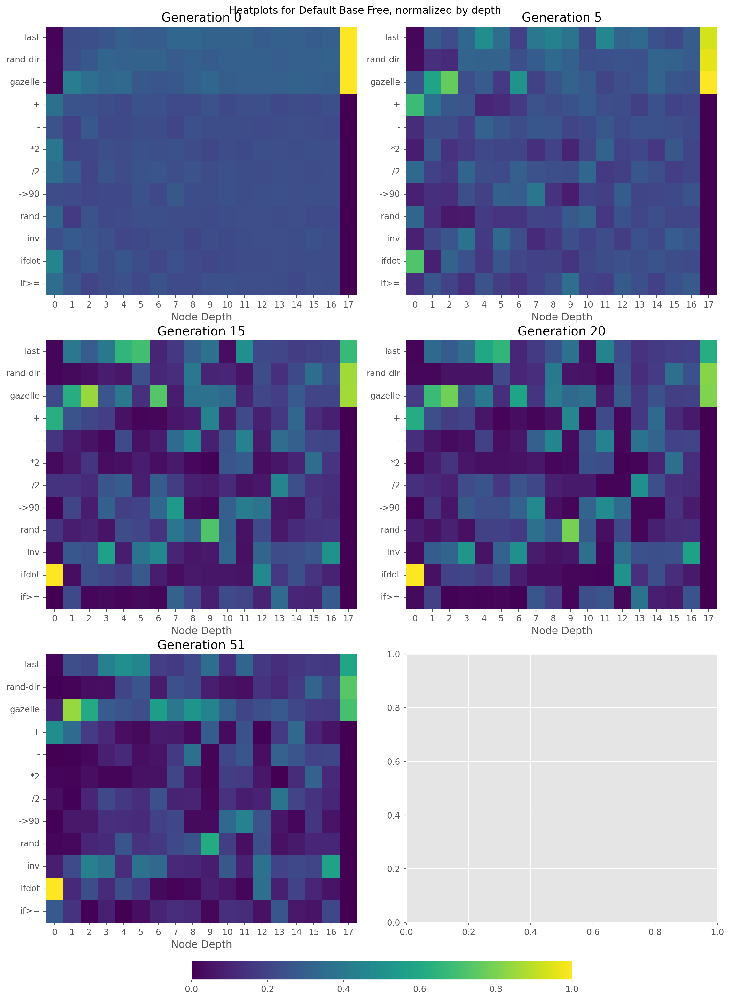
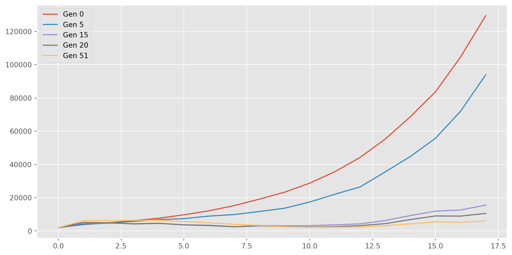
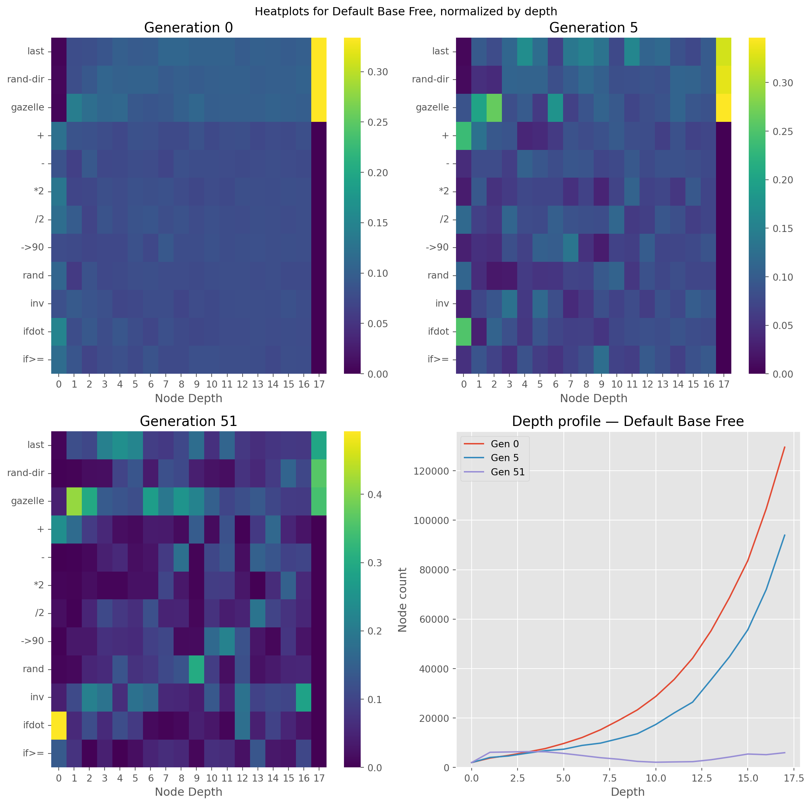

import sys, os
from pathlib import Path
_project_root = Path.cwd()
while not (_project_root / "src").exists():
_project_root = _project_root.parent
os.chdir(_project_root)Allotax Test
Allotax of operations
Setup
Navigate to root:
Imports
## std lib
from pathlib import Path
from itertools import product
import json
from ast import literal_eval
import pprint
## 3rd p lib
from IPython.display import display, HTML
import numpy as np
import matplotlib.pyplot as plt
import matplotlib.animation as animation
import pandas as pd
import seaborn as sns
from py_allotax.generate_svg import generate_svg
## project
from src.node import INTERNALS
from src.run import TERMINAL_DICT, BASE_TERMINALS, DEICTIC_TERMINALS, NAME_TERMINALS
from src.config_parser import Config, load_config
# constants
IMG_WIDTH = 12
IMG_HEIGHT = 6
plt.style.use(["ggplot"])Load Data
It’s big, so we’ll start with one line:
experiment = "Default"
result_path = Path("results")
path_end = "pride_history.jsonl"
terminal = "Base"
strategy = "Free"
file_path = result_path / experiment / terminal / strategy / path_end
config_path = Path("configs") / f"{experiment}.toml"
config = load_config(config_path)
line = ""
with open(file_path) as f:
for gen, line in enumerate(f):
print(gen)
print(line[:50])
line = line0
[[{"op": "*2", "children": [{"op": "if>=", "childr
1
[[{"op": "+", "children": [{"op": "*2", "children"
2
[[{"op": "rand", "children": [{"op": "rand", "chil
3
[[{"op": "->90", "children": [{"op": "ifdot", "chi
4
[[{"op": "+", "children": [{"op": "*2", "children"
5
[[{"op": "ifdot", "children": [{"op": "inv", "chil
6
[[{"op": "+", "children": [{"op": "*2", "children"
7
[[{"op": "ifdot", "children": [{"op": "inv", "chil
8
[[{"op": "->90", "children": [{"op": "->90", "chil
9
[[{"op": "ifdot", "children": [{"op": "inv", "chil
10
[[{"op": "ifdot", "children": [{"op": "inv", "chil
11
[[{"op": "ifdot", "children": [{"op": "inv", "chil
12
[[{"op": "ifdot", "children": [{"op": "inv", "chil
13
[[{"op": "ifdot", "children": [{"op": "inv", "chil
14
[[{"op": "ifdot", "children": [{"op": "inv", "chil
15
[[{"op": "ifdot", "children": [{"op": "inv", "chil
16
[[{"op": "ifdot", "children": [{"op": "inv", "chil
17
[[{"op": "ifdot", "children": [{"op": "inv", "chil
18
[[{"op": "ifdot", "children": [{"op": "inv", "chil
19
[[{"op": "ifdot", "children": [{"op": "inv", "chil
20
[[{"op": "ifdot", "children": [{"op": "inv", "chil
21
[[{"op": "ifdot", "children": [{"op": "inv", "chil
22
[[{"op": "+", "children": [{"op": "rand", "childre
23
[[{"op": "ifdot", "children": [{"op": "inv", "chil
24
[[{"op": "ifdot", "children": [{"op": "inv", "chil
25
[[{"op": "ifdot", "children": [{"op": "inv", "chil
26
[[{"op": "ifdot", "children": [{"op": "inv", "chil
27
[[{"op": "->90", "children": [{"op": "rand", "chil
28
[[{"op": "ifdot", "children": [{"op": "inv", "chil
29
[[{"op": "ifdot", "children": [{"op": "gazelle", "
30
[[{"op": "ifdot", "children": [{"op": "inv", "chil
31
[[{"op": "ifdot", "children": [{"op": "inv", "chil
32
[[{"op": "ifdot", "children": [{"op": "inv", "chil
33
[[{"op": "ifdot", "children": [{"op": "inv", "chil
34
[[{"op": "ifdot", "children": [{"op": "->90", "chi
35
[[{"op": "ifdot", "children": [{"op": "inv", "chil
36
[[{"op": "ifdot", "children": [{"op": "inv", "chil
37
[[{"op": "ifdot", "children": [{"op": "inv", "chil
38
[[{"op": "->90", "children": [{"op": "->90", "chil
39
[[{"op": "ifdot", "children": [{"op": "inv", "chil
40
[[{"op": "ifdot", "children": [{"op": "-", "childr
41
[[{"op": "ifdot", "children": [{"op": "inv", "chil
42
[[{"op": "ifdot", "children": [{"op": "inv", "chil
43
[[{"op": "ifdot", "children": [{"op": "inv", "chil
44
[[{"op": "ifdot", "children": [{"op": "last", "chi
45
[[{"op": "ifdot", "children": [{"op": "inv", "chil
46
[[{"op": "inv", "children": [{"op": "inv", "childr
47
[[{"op": "ifdot", "children": [{"op": "inv", "chil
48
[[{"op": "ifdot", "children": [{"op": "inv", "chil
49
[[{"op": "ifdot", "children": [{"op": "inv", "chil
50
[[{"op": "ifdot", "children": [{"op": "inv", "chil
51
[[{"op": "ifdot", "children": [{"op": "inv", "chilterminals_used = TERMINAL_DICT[terminal]
print(terminals_used)['last', 'rand-dir', 'gazelle']Building Count Operations
prides = literal_eval(line)print(prides[0][0]){'op': 'ifdot', 'children': [{'op': 'inv', 'children': [{'op': 'last', 'children': []}]}, {'op': 'last', 'children': []}, {'op': 'gazelle', 'children': []}, {'op': '->90', 'children': [{'op': 'rand', 'children': [{'op': 'if>=', 'children': [{'op': 'rand-dir', 'children': []}, {'op': 'rand-dir', 'children': []}, {'op': 'ifdot', 'children': [{'op': 'last', 'children': []}, {'op': 'rand-dir', 'children': []}, {'op': '-', 'children': [{'op': 'rand-dir', 'children': []}]}, {'op': '*2', 'children': [{'op': 'inv', 'children': [{'op': 'gazelle', 'children': []}]}]}]}, {'op': 'ifdot', 'children': [{'op': 'inv', 'children': [{'op': 'rand', 'children': [{'op': 'gazelle', 'children': []}]}]}, {'op': 'rand-dir', 'children': []}, {'op': 'inv', 'children': [{'op': 'inv', 'children': [{'op': '+', 'children': [{'op': '/2', 'children': [{'op': '->90', 'children': [{'op': '/2', 'children': [{'op': 'gazelle', 'children': []}]}]}]}, {'op': '->90', 'children': [{'op': '->90', 'children': [{'op': 'gazelle', 'children': []}]}]}]}]}]}, {'op': 'gazelle', 'children': []}]}]}]}]}]}def build_counts():
counts = {
operator : [0 for _ in range(config.max_depth+1)] # TODO: Change once rerun with max_depth bug fixed
for operator in terminals_used+INTERNALS
}
return countsLook at a single lion:
def count_operations(node, level=0, counts=None):
if counts is None:
counts = build_counts()
op = node['op']
counts[op][level] += 1
for child in node["children"]:
count_operations(child, level+1, counts)
return counts
counts = count_operations(prides[0][0])
pprint.pprint(counts){'*2': [0, 0, 0, 0, 0, 1, 0, 0, 0, 0, 0, 0, 0, 0, 0, 0, 0, 0],
'+': [0, 0, 0, 0, 0, 0, 0, 1, 0, 0, 0, 0, 0, 0, 0, 0, 0, 0],
'-': [0, 0, 0, 0, 0, 1, 0, 0, 0, 0, 0, 0, 0, 0, 0, 0, 0, 0],
'->90': [0, 1, 0, 0, 0, 0, 0, 0, 1, 2, 0, 0, 0, 0, 0, 0, 0, 0],
'/2': [0, 0, 0, 0, 0, 0, 0, 0, 1, 0, 1, 0, 0, 0, 0, 0, 0, 0],
'gazelle': [0, 1, 0, 0, 0, 1, 0, 2, 0, 0, 1, 1, 0, 0, 0, 0, 0, 0],
'if>=': [0, 0, 0, 1, 0, 0, 0, 0, 0, 0, 0, 0, 0, 0, 0, 0, 0, 0],
'ifdot': [1, 0, 0, 0, 2, 0, 0, 0, 0, 0, 0, 0, 0, 0, 0, 0, 0, 0],
'inv': [0, 1, 0, 0, 0, 2, 2, 0, 0, 0, 0, 0, 0, 0, 0, 0, 0, 0],
'last': [0, 1, 1, 0, 0, 1, 0, 0, 0, 0, 0, 0, 0, 0, 0, 0, 0, 0],
'rand': [0, 0, 1, 0, 0, 0, 1, 0, 0, 0, 0, 0, 0, 0, 0, 0, 0, 0],
'rand-dir': [0, 0, 0, 0, 2, 2, 1, 0, 0, 0, 0, 0, 0, 0, 0, 0, 0, 0]}Look at a pride:
counts = build_counts()
for lion in prides[0]:
counts = count_operations(lion, level=0, counts=counts)
pprint.pprint(counts){'*2': [0, 0, 0, 0, 1, 1, 0, 0, 0, 0, 1, 1, 0, 0, 1, 6, 2, 0],
'+': [1, 2, 2, 0, 0, 0, 0, 1, 0, 2, 0, 1, 0, 1, 4, 2, 1, 0],
'-': [0, 0, 0, 1, 1, 1, 0, 1, 2, 0, 1, 2, 0, 3, 4, 3, 3, 0],
'->90': [0, 2, 0, 1, 0, 0, 1, 1, 1, 2, 1, 2, 2, 0, 0, 2, 1, 0],
'/2': [0, 0, 2, 2, 1, 0, 1, 0, 1, 0, 1, 0, 0, 4, 3, 2, 2, 0],
'gazelle': [0, 4, 8, 3, 1, 1, 4, 2, 1, 1, 2, 1, 1, 1, 3, 3, 3, 15],
'if>=': [1, 1, 0, 1, 0, 0, 0, 1, 1, 0, 1, 1, 0, 3, 1, 1, 4, 0],
'ifdot': [2, 2, 2, 1, 3, 1, 0, 0, 0, 0, 0, 0, 3, 1, 3, 2, 1, 0],
'inv': [0, 1, 3, 4, 0, 6, 4, 0, 0, 0, 1, 0, 2, 2, 3, 4, 9, 0],
'last': [0, 2, 1, 5, 4, 4, 1, 0, 1, 1, 0, 2, 1, 1, 2, 3, 3, 11],
'rand': [0, 0, 1, 0, 3, 1, 1, 1, 1, 3, 1, 0, 1, 0, 1, 2, 2, 0],
'rand-dir': [0, 0, 0, 0, 2, 3, 1, 0, 1, 0, 0, 0, 1, 1, 2, 6, 4, 15]}Look at a generation:
counts = build_counts()
for pride in prides:
for lion in pride:
counts = count_operations(lion, level=0, counts=counts)
pprint.pprint(counts){'*2': [15,
32,
110,
49,
39,
127,
111,
400,
105,
10,
187,
192,
72,
3,
256,
823,
290,
0],
'+': [483,
1046,
543,
356,
120,
67,
175,
135,
50,
351,
30,
276,
9,
257,
696,
274,
137,
0],
'-': [0,
20,
68,
274,
366,
99,
122,
334,
602,
11,
224,
299,
45,
473,
548,
531,
528,
0],
'->90': [5,
191,
205,
438,
402,
330,
455,
417,
44,
37,
357,
487,
295,
86,
37,
418,
138,
0],
'/2': [38,
23,
326,
700,
511,
372,
586,
185,
161,
22,
150,
89,
112,
592,
417,
394,
275,
0],
'gazelle': [85,
2549,
1869,
891,
807,
661,
1314,
771,
848,
548,
318,
228,
281,
427,
442,
465,
432,
2074],
'if>=': [274,
443,
20,
277,
12,
106,
233,
250,
183,
21,
140,
137,
51,
411,
138,
137,
548,
0],
'ifdot': [984,
354,
724,
374,
721,
479,
57,
20,
36,
107,
63,
14,
419,
138,
411,
275,
137,
0],
'inv': [82,
679,
1330,
1201,
399,
1046,
795,
218,
174,
97,
287,
100,
440,
307,
463,
555,
1472,
0],
'last': [15,
719,
662,
1367,
1543,
1279,
436,
327,
355,
431,
145,
357,
190,
202,
325,
450,
412,
1746],
'rand': [15,
62,
322,
379,
811,
397,
387,
433,
419,
745,
185,
40,
278,
69,
145,
275,
275,
0],
'rand-dir': [4,
35,
108,
117,
626,
737,
174,
476,
360,
101,
50,
43,
171,
175,
362,
857,
548,
2172]}Cool, that seems to be working. But probably it makes the most sense to have these in a dataframe.
df = pd.DataFrame.from_dict(counts, orient="index")
df.head()| 0 | 1 | 2 | 3 | 4 | 5 | 6 | 7 | 8 | 9 | 10 | 11 | 12 | 13 | 14 | 15 | 16 | 17 | |
|---|---|---|---|---|---|---|---|---|---|---|---|---|---|---|---|---|---|---|
| last | 15 | 719 | 662 | 1367 | 1543 | 1279 | 436 | 327 | 355 | 431 | 145 | 357 | 190 | 202 | 325 | 450 | 412 | 1746 |
| rand-dir | 4 | 35 | 108 | 117 | 626 | 737 | 174 | 476 | 360 | 101 | 50 | 43 | 171 | 175 | 362 | 857 | 548 | 2172 |
| gazelle | 85 | 2549 | 1869 | 891 | 807 | 661 | 1314 | 771 | 848 | 548 | 318 | 228 | 281 | 427 | 442 | 465 | 432 | 2074 |
| + | 483 | 1046 | 543 | 356 | 120 | 67 | 175 | 135 | 50 | 351 | 30 | 276 | 9 | 257 | 696 | 274 | 137 | 0 |
| - | 0 | 20 | 68 | 274 | 366 | 99 | 122 | 334 | 602 | 11 | 224 | 299 | 45 | 473 | 548 | 531 | 528 | 0 |
Great, this looks good. The column index are what ‘hierarchy’ the operation is in, with \(0\) being the top of the chain and \(17\) the lowest (there’s a slight bug with max_depth where I did \(\ge\) as the redo condition for initial construction and \(>\) for crossover, which will require a redo for proper results, but is okay).
Getting Results
Quick inspection of the first line…
print(file_path)
with open(file_path) as f:
line = f.readline()
line = line
prides = literal_eval(line)
print(prides[0][0])results/Default/Base/Free/pride_history.jsonl
{'op': '*2', 'children': [{'op': 'if>=', 'children': [{'op': '+', 'children': [{'op': 'rand-dir', 'children': []}, {'op': 'last', 'children': []}]}, {'op': '+', 'children': [{'op': 'gazelle', 'children': []}, {'op': '/2', 'children': [{'op': 'rand', 'children': [{'op': '/2', 'children': [{'op': '->90', 'children': [{'op': '*2', 'children': [{'op': '->90', 'children': [{'op': '+', 'children': [{'op': '/2', 'children': [{'op': 'gazelle', 'children': []}]}, {'op': 'rand', 'children': [{'op': '+', 'children': [{'op': '/2', 'children': [{'op': 'inv', 'children': [{'op': '*2', 'children': [{'op': 'rand-dir', 'children': []}]}]}]}, {'op': '->90', 'children': [{'op': 'last', 'children': []}]}]}]}]}]}]}]}]}]}]}]}, {'op': 'inv', 'children': [{'op': 'ifdot', 'children': [{'op': 'last', 'children': []}, {'op': '+', 'children': [{'op': '*2', 'children': [{'op': '*2', 'children': [{'op': 'ifdot', 'children': [{'op': 'inv', 'children': [{'op': 'inv', 'children': [{'op': 'gazelle', 'children': []}]}]}, {'op': '/2', 'children': [{'op': 'inv', 'children': [{'op': 'ifdot', 'children': [{'op': '-', 'children': [{'op': 'rand-dir', 'children': []}]}, {'op': 'gazelle', 'children': []}, {'op': 'rand-dir', 'children': []}, {'op': 'gazelle', 'children': []}]}]}]}, {'op': 'rand-dir', 'children': []}, {'op': '-', 'children': [{'op': 'last', 'children': []}]}]}]}]}, {'op': 'inv', 'children': [{'op': '+', 'children': [{'op': 'gazelle', 'children': []}, {'op': 'if>=', 'children': [{'op': 'rand', 'children': [{'op': 'last', 'children': []}]}, {'op': 'rand', 'children': [{'op': '->90', 'children': [{'op': '*2', 'children': [{'op': 'ifdot', 'children': [{'op': '*2', 'children': [{'op': 'inv', 'children': [{'op': '*2', 'children': [{'op': 'inv', 'children': [{'op': 'last', 'children': []}]}]}]}]}, {'op': '+', 'children': [{'op': 'rand', 'children': [{'op': 'rand', 'children': [{'op': 'rand-dir', 'children': []}]}]}, {'op': 'rand-dir', 'children': []}]}, {'op': 'rand', 'children': [{'op': '-', 'children': [{'op': '/2', 'children': [{'op': 'ifdot', 'children': [{'op': '+', 'children': [{'op': 'gazelle', 'children': []}, {'op': 'rand-dir', 'children': []}]}, {'op': 'last', 'children': []}, {'op': 'gazelle', 'children': []}, {'op': '/2', 'children': [{'op': 'gazelle', 'children': []}]}]}]}]}]}, {'op': 'rand-dir', 'children': []}]}]}]}]}, {'op': 'if>=', 'children': [{'op': 'ifdot', 'children': [{'op': 'inv', 'children': [{'op': 'gazelle', 'children': []}]}, {'op': '-', 'children': [{'op': 'rand-dir', 'children': []}]}, {'op': '-', 'children': [{'op': '/2', 'children': [{'op': '/2', 'children': [{'op': 'inv', 'children': [{'op': 'rand', 'children': [{'op': '/2', 'children': [{'op': 'rand', 'children': [{'op': 'last', 'children': []}]}]}]}]}]}]}]}, {'op': 'rand-dir', 'children': []}]}, {'op': '->90', 'children': [{'op': '-', 'children': [{'op': 'last', 'children': []}]}]}, {'op': 'last', 'children': []}, {'op': 'inv', 'children': [{'op': 'if>=', 'children': [{'op': 'gazelle', 'children': []}, {'op': 'rand', 'children': [{'op': '-', 'children': [{'op': 'if>=', 'children': [{'op': 'ifdot', 'children': [{'op': '->90', 'children': [{'op': 'inv', 'children': [{'op': 'gazelle', 'children': []}]}]}, {'op': 'if>=', 'children': [{'op': '->90', 'children': [{'op': 'last', 'children': []}]}, {'op': 'ifdot', 'children': [{'op': 'gazelle', 'children': []}, {'op': 'last', 'children': []}, {'op': 'rand-dir', 'children': []}, {'op': 'rand-dir', 'children': []}]}, {'op': '+', 'children': [{'op': 'last', 'children': []}, {'op': 'gazelle', 'children': []}]}, {'op': 'rand', 'children': [{'op': 'last', 'children': []}]}]}, {'op': '*2', 'children': [{'op': '+', 'children': [{'op': 'gazelle', 'children': []}, {'op': 'gazelle', 'children': []}]}]}, {'op': 'gazelle', 'children': []}]}, {'op': '*2', 'children': [{'op': 'inv', 'children': [{'op': '/2', 'children': [{'op': 'last', 'children': []}]}]}]}, {'op': '->90', 'children': [{'op': 'last', 'children': []}]}, {'op': 'inv', 'children': [{'op': '-', 'children': [{'op': '+', 'children': [{'op': 'rand-dir', 'children': []}, {'op': 'gazelle', 'children': []}]}]}]}]}]}]}, {'op': 'rand', 'children': [{'op': '*2', 'children': [{'op': '/2', 'children': [{'op': '+', 'children': [{'op': 'last', 'children': []}, {'op': 'if>=', 'children': [{'op': '/2', 'children': [{'op': 'last', 'children': []}]}, {'op': 'last', 'children': []}, {'op': '*2', 'children': [{'op': 'last', 'children': []}]}, {'op': '+', 'children': [{'op': 'gazelle', 'children': []}, {'op': 'last', 'children': []}]}]}]}]}]}]}, {'op': '*2', 'children': [{'op': 'gazelle', 'children': []}]}]}]}]}, {'op': 'last', 'children': []}]}]}]}]}, {'op': 'rand-dir', 'children': []}, {'op': 'inv', 'children': [{'op': 'gazelle', 'children': []}]}]}]}, {'op': 'inv', 'children': [{'op': '/2', 'children': [{'op': 'ifdot', 'children': [{'op': 'inv', 'children': [{'op': '/2', 'children': [{'op': '*2', 'children': [{'op': 'rand-dir', 'children': []}]}]}]}, {'op': 'rand-dir', 'children': []}, {'op': '-', 'children': [{'op': 'if>=', 'children': [{'op': 'gazelle', 'children': []}, {'op': 'ifdot', 'children': [{'op': '*2', 'children': [{'op': '-', 'children': [{'op': 'rand', 'children': [{'op': '/2', 'children': [{'op': 'ifdot', 'children': [{'op': '+', 'children': [{'op': '*2', 'children': [{'op': 'rand-dir', 'children': []}]}, {'op': 'inv', 'children': [{'op': 'last', 'children': []}]}]}, {'op': '+', 'children': [{'op': 'gazelle', 'children': []}, {'op': 'ifdot', 'children': [{'op': 'ifdot', 'children': [{'op': 'inv', 'children': [{'op': 'rand-dir', 'children': []}]}, {'op': '->90', 'children': [{'op': 'gazelle', 'children': []}]}, {'op': 'last', 'children': []}, {'op': 'inv', 'children': [{'op': 'gazelle', 'children': []}]}]}, {'op': 'rand-dir', 'children': []}, {'op': 'rand', 'children': [{'op': 'rand-dir', 'children': []}]}, {'op': 'last', 'children': []}]}]}, {'op': '/2', 'children': [{'op': '/2', 'children': [{'op': 'if>=', 'children': [{'op': 'last', 'children': []}, {'op': 'inv', 'children': [{'op': 'rand-dir', 'children': []}]}, {'op': '+', 'children': [{'op': 'last', 'children': []}, {'op': 'gazelle', 'children': []}]}, {'op': 'inv', 'children': [{'op': 'rand-dir', 'children': []}]}]}]}]}, {'op': 'if>=', 'children': [{'op': 'rand', 'children': [{'op': 'gazelle', 'children': []}]}, {'op': 'last', 'children': []}, {'op': '/2', 'children': [{'op': '/2', 'children': [{'op': 'gazelle', 'children': []}]}]}, {'op': 'rand', 'children': [{'op': 'gazelle', 'children': []}]}]}]}]}]}]}]}, {'op': 'last', 'children': []}, {'op': 'rand-dir', 'children': []}, {'op': '/2', 'children': [{'op': '/2', 'children': [{'op': '*2', 'children': [{'op': 'last', 'children': []}]}]}]}]}, {'op': 'ifdot', 'children': [{'op': 'last', 'children': []}, {'op': '/2', 'children': [{'op': '-', 'children': [{'op': 'inv', 'children': [{'op': '+', 'children': [{'op': 'gazelle', 'children': []}, {'op': 'rand', 'children': [{'op': '-', 'children': [{'op': 'last', 'children': []}]}]}]}]}]}]}, {'op': 'rand', 'children': [{'op': 'gazelle', 'children': []}]}, {'op': 'ifdot', 'children': [{'op': 'last', 'children': []}, {'op': 'gazelle', 'children': []}, {'op': '/2', 'children': [{'op': 'if>=', 'children': [{'op': '/2', 'children': [{'op': '+', 'children': [{'op': 'ifdot', 'children': [{'op': '+', 'children': [{'op': '-', 'children': [{'op': '-', 'children': [{'op': 'gazelle', 'children': []}]}]}, {'op': '->90', 'children': [{'op': '->90', 'children': [{'op': 'rand-dir', 'children': []}]}]}]}, {'op': '+', 'children': [{'op': 'rand', 'children': [{'op': 'last', 'children': []}]}, {'op': '/2', 'children': [{'op': 'inv', 'children': [{'op': 'last', 'children': []}]}]}]}, {'op': 'if>=', 'children': [{'op': '+', 'children': [{'op': 'ifdot', 'children': [{'op': 'rand-dir', 'children': []}, {'op': 'gazelle', 'children': []}, {'op': 'gazelle', 'children': []}, {'op': 'last', 'children': []}]}, {'op': '+', 'children': [{'op': 'last', 'children': []}, {'op': 'rand-dir', 'children': []}]}]}, {'op': '/2', 'children': [{'op': 'if>=', 'children': [{'op': 'last', 'children': []}, {'op': 'last', 'children': []}, {'op': 'last', 'children': []}, {'op': 'gazelle', 'children': []}]}]}, {'op': 'last', 'children': []}, {'op': '*2', 'children': [{'op': 'gazelle', 'children': []}]}]}, {'op': 'last', 'children': []}]}, {'op': '+', 'children': [{'op': 'if>=', 'children': [{'op': '-', 'children': [{'op': '*2', 'children': [{'op': 'rand-dir', 'children': []}]}]}, {'op': 'ifdot', 'children': [{'op': 'rand', 'children': [{'op': 'rand-dir', 'children': []}]}, {'op': 'gazelle', 'children': []}, {'op': 'rand', 'children': [{'op': 'last', 'children': []}]}, {'op': 'rand-dir', 'children': []}]}, {'op': '-', 'children': [{'op': 'last', 'children': []}]}, {'op': '->90', 'children': [{'op': '->90', 'children': [{'op': 'last', 'children': []}]}]}]}, {'op': 'rand-dir', 'children': []}]}]}]}, {'op': '->90', 'children': [{'op': '/2', 'children': [{'op': 'ifdot', 'children': [{'op': 'gazelle', 'children': []}, {'op': '+', 'children': [{'op': 'rand-dir', 'children': []}, {'op': 'gazelle', 'children': []}]}, {'op': '+', 'children': [{'op': 'gazelle', 'children': []}, {'op': 'rand', 'children': [{'op': '/2', 'children': [{'op': 'rand-dir', 'children': []}]}]}]}, {'op': 'if>=', 'children': [{'op': 'gazelle', 'children': []}, {'op': 'ifdot', 'children': [{'op': '->90', 'children': [{'op': 'last', 'children': []}]}, {'op': '->90', 'children': [{'op': 'rand-dir', 'children': []}]}, {'op': 'inv', 'children': [{'op': 'last', 'children': []}]}, {'op': 'last', 'children': []}]}, {'op': 'last', 'children': []}, {'op': 'inv', 'children': [{'op': '->90', 'children': [{'op': 'rand-dir', 'children': []}]}]}]}]}]}]}, {'op': '+', 'children': [{'op': '*2', 'children': [{'op': '->90', 'children': [{'op': 'last', 'children': []}]}]}, {'op': '+', 'children': [{'op': 'rand', 'children': [{'op': 'inv', 'children': [{'op': 'rand-dir', 'children': []}]}]}, {'op': '/2', 'children': [{'op': 'rand-dir', 'children': []}]}]}]}, {'op': 'ifdot', 'children': [{'op': 'if>=', 'children': [{'op': '+', 'children': [{'op': '-', 'children': [{'op': 'inv', 'children': [{'op': '*2', 'children': [{'op': 'gazelle', 'children': []}]}]}]}, {'op': '+', 'children': [{'op': 'last', 'children': []}, {'op': 'last', 'children': []}]}]}, {'op': 'rand-dir', 'children': []}, {'op': '/2', 'children': [{'op': '/2', 'children': [{'op': 'gazelle', 'children': []}]}]}, {'op': '/2', 'children': [{'op': '+', 'children': [{'op': 'rand-dir', 'children': []}, {'op': 'gazelle', 'children': []}]}]}]}, {'op': 'last', 'children': []}, {'op': '*2', 'children': [{'op': '+', 'children': [{'op': '/2', 'children': [{'op': 'if>=', 'children': [{'op': 'last', 'children': []}, {'op': 'rand-dir', 'children': []}, {'op': 'rand-dir', 'children': []}, {'op': 'rand', 'children': [{'op': 'rand-dir', 'children': []}]}]}]}, {'op': 'ifdot', 'children': [{'op': '*2', 'children': [{'op': '-', 'children': [{'op': 'gazelle', 'children': []}]}]}, {'op': 'ifdot', 'children': [{'op': 'rand', 'children': [{'op': 'last', 'children': []}]}, {'op': 'if>=', 'children': [{'op': 'last', 'children': []}, {'op': 'gazelle', 'children': []}, {'op': 'rand-dir', 'children': []}, {'op': 'rand-dir', 'children': []}]}, {'op': '+', 'children': [{'op': 'last', 'children': []}, {'op': 'last', 'children': []}]}, {'op': 'if>=', 'children': [{'op': 'gazelle', 'children': []}, {'op': 'last', 'children': []}, {'op': 'last', 'children': []}, {'op': 'gazelle', 'children': []}]}]}, {'op': 'last', 'children': []}, {'op': '-', 'children': [{'op': 'if>=', 'children': [{'op': 'gazelle', 'children': []}, {'op': 'last', 'children': []}, {'op': 'gazelle', 'children': []}, {'op': 'last', 'children': []}]}]}]}]}]}, {'op': 'gazelle', 'children': []}]}]}]}, {'op': '/2', 'children': [{'op': '-', 'children': [{'op': 'last', 'children': []}]}]}]}]}, {'op': '->90', 'children': [{'op': 'last', 'children': []}]}]}]}, {'op': 'last', 'children': []}]}]}]}]}]}Looks good.
def get_gen_op_counts(file_path, gen_idx):
with open(file_path) as f:
for i, line in enumerate(f):
if i == gen_idx:
population = json.loads(line)
break
counts = build_counts()
for pride in population:
for lion in pride:
count_operations(lion, 0, counts)
df = pd.DataFrame.from_dict(counts, orient="index")
return dfgenerations_of_interest = [0, 5, 15, 20, 51]
dfs = [get_gen_op_counts(file_path, gen) for gen in generations_of_interest]
n_gen = len(generations_of_interest)
n_rows = (n_gen + 1) // 2
fig, axes = plt.subplots(n_rows, 2, figsize=(IMG_WIDTH, IMG_HEIGHT*n_rows))
axes = axes.flatten()
for i, (ax, df, title) in enumerate(zip(axes, dfs, [f"Generation {gen}" for gen in generations_of_interest])):
df = df.div(df.sum()) ## normalize by column (depth)
sns.heatmap(df, ax=ax, cmap="viridis", annot=False, cbar=False)
ax.set_title(title)
ax.set_xlabel("Node Depth")
plt.suptitle(f"Heatplots for {experiment} {terminal} {strategy}, normalized by depth")
plt.tight_layout()
fig.subplots_adjust(bottom=0.1)
sm = plt.cm.ScalarMappable(cmap="viridis", norm=plt.Normalize(0, 1))
cbar = fig.colorbar(sm, ax=axes, orientation="horizontal",
fraction=0.02, pad=0.04, location="bottom")
plt.show()
def get_depth_profile(df):
return df.sum(axis=0) # sum all ops at each depth level
depth_profiles = pd.DataFrame(
{f"Gen {gen}": get_depth_profile(df) for gen, df in zip(generations_of_interest, dfs)}
)
depth_profiles.plot(figsize=(IMG_WIDTH, IMG_HEIGHT))
ax.set_xlabel("Depth")
ax.set_ylabel("Node count")
ax.set_title(f"Depth profile across generations — {experiment} {terminal} {strategy}")Text(0.5, 1.0, 'Depth profile across generations — Default Base Free')
Great, looks good, now we’ll turn this into functions in src and run them on all our experiments that way, too.
To check:
def plot_depths(gens, dfs, ax, title_specs):
depth_profiles = pd.DataFrame(
{f"Gen {gen}": df.sum(axis=0) for gen, df in zip(gens, dfs)}
)
depth_profiles.plot(ax=ax)
ax.set_xlabel("Depth")
ax.set_ylabel("Node count")
ax.set_ylim(bottom=0)
ax.set_title(f"Depth profile — {title_specs}")
def plot_heatmaps(file_path, gens, title_spec):
dfs = [get_gen_op_counts(file_path, gen) for gen in gens]
n_axes = len(gens) + 1
n_rows = (n_axes + 1) // 2
fig, axes = plt.subplots(n_rows, 2, figsize=(IMG_WIDTH, IMG_HEIGHT * n_rows))
axes = axes.flatten()
for i, (ax, df, title) in enumerate(
zip(axes, dfs, [f"Generation {gen}" for gen in gens])
):
df = df.div(df.sum()) ## normalize by column (depth)
sns.heatmap(df, ax=ax, cmap="viridis", annot=False, cbar=True)
ax.set_title(title)
ax.set_xlabel("Node Depth")
plot_depths(gens, dfs, axes[len(gens)], title_spec)
plt.suptitle(f"Heatplots for {title_spec}, normalized by depth")
plt.tight_layout()
plt.show()
plot_heatmaps(file_path=file_path, gens=[0, 5, 51], title_spec=f"{experiment} {terminal} {strategy}" )